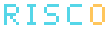
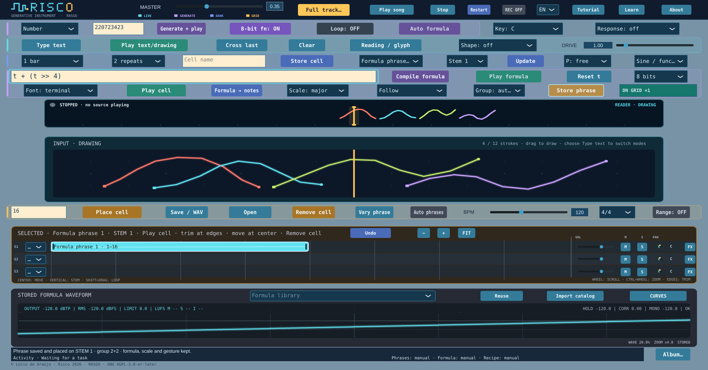

Text and drawing
Write a phrase or draw strokes. Height, contour and articulation take part in musical generation.

Composition instrument · RASGO
Write, draw and turn formulas into musical material. Arrange cells into phrases and stems, and hear each decision as you compose.
Source code and instructionsStart exploringThe instrument

Write a phrase or draw strokes. Height, contour and articulation take part in musical generation.
Explore expressions with t as direct sound or convert their values into pitches, durations, accents and rests.
Store material, place occurrences on the grid and develop phrases through repetition, variation and response.
Tutorial · first composition
t*(t>>5); compile it and reset t to compare.Select EN in the app to switch the main controls and built-in help to English. Some advanced menus and messages still use Portuguese. The README covers builds, dependencies and limitations.
Cross-platform · stable release 0.1.0
All three formats opened in Debian 12, Ubuntu 24.04, Fedora 45 and Arch. The .deb was installed on Debian and Ubuntu.
Download .deb · Download AppImage · Download installable .tar.gz
Portable ZIP. If an MSVC DLL is missing, install the Visual C++ x64 runtime.
Download for Windows →ZIP archive, unsigned and not notarized. No Intel Macs.
Download for macOS →Stable release 0.1.0. Automated checks cover build, tests and startup; interface and audio still need evaluation on personal computers. SHA256SUMS · Step-by-step installation · Source code.
About Risco
Created by Lúcio de Araújo, Risco explores relationships between formula, gesture, listening and musical form. It brings musical software and sound research together, keeping composition close to experimentation.
Original code is licensed under AGPL-3.0-or-later. The Ayumi core retains its MIT license and credits; fonts and other dependencies are documented in the repository.
Credits and licenses